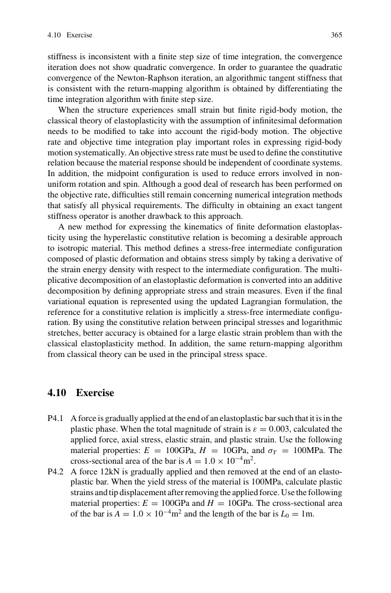
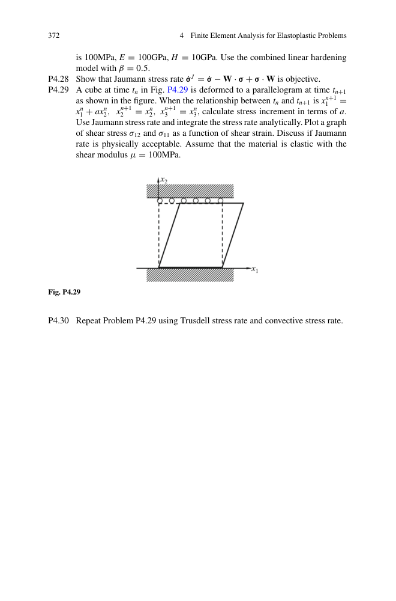
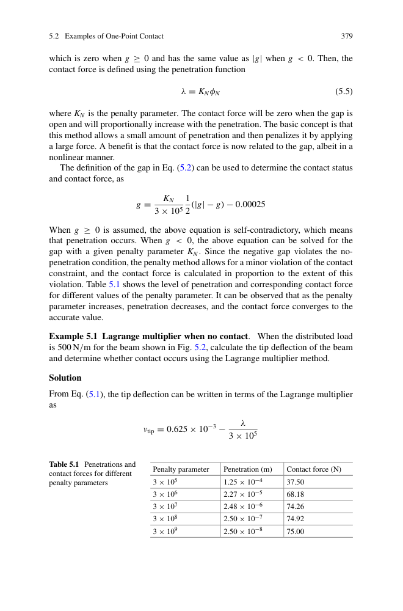
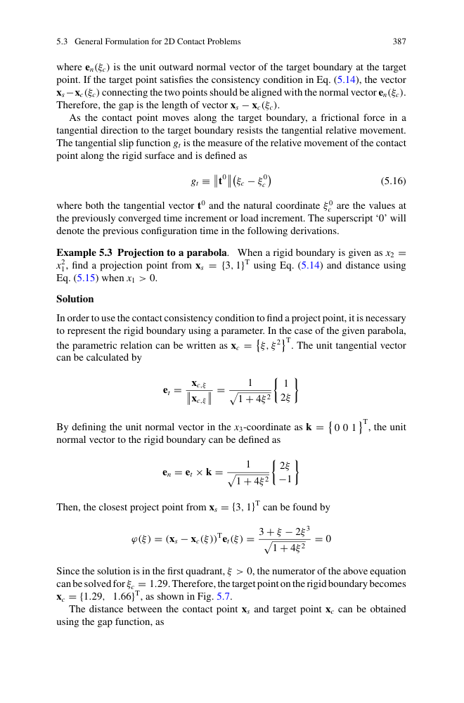
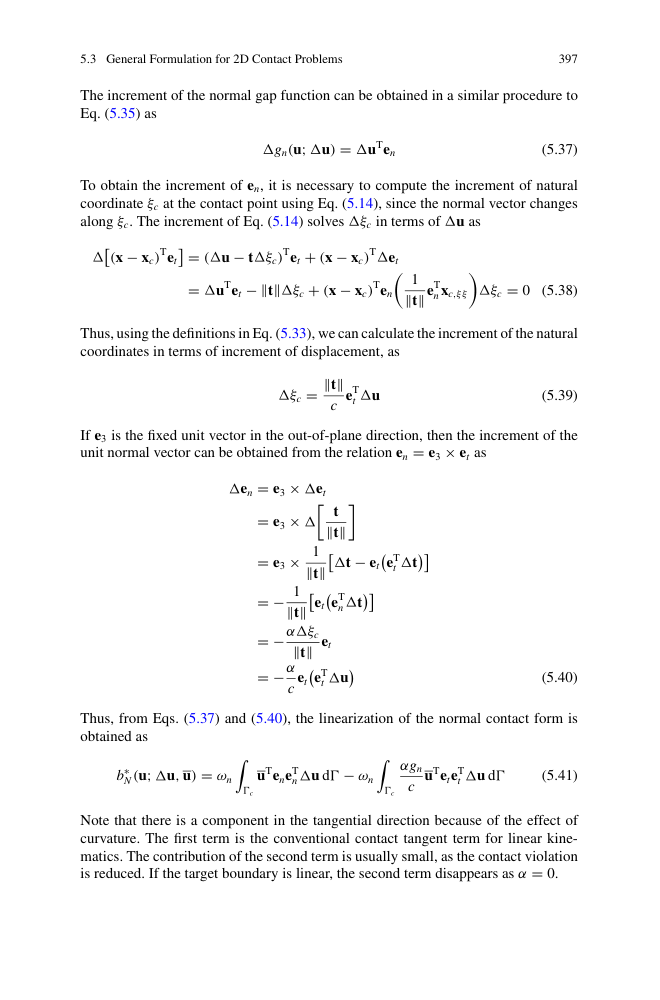
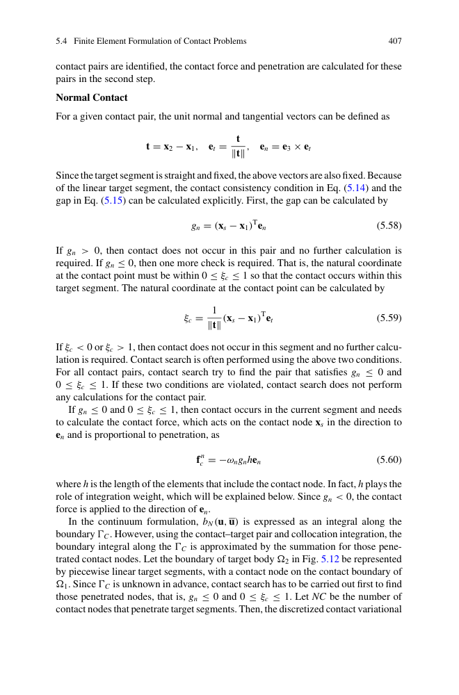
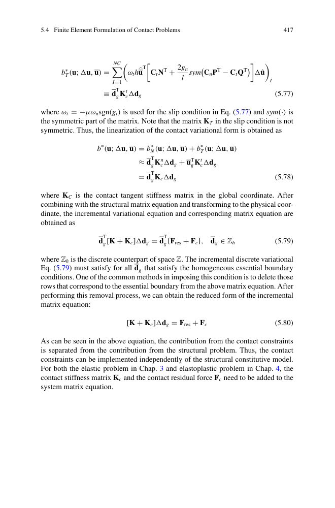
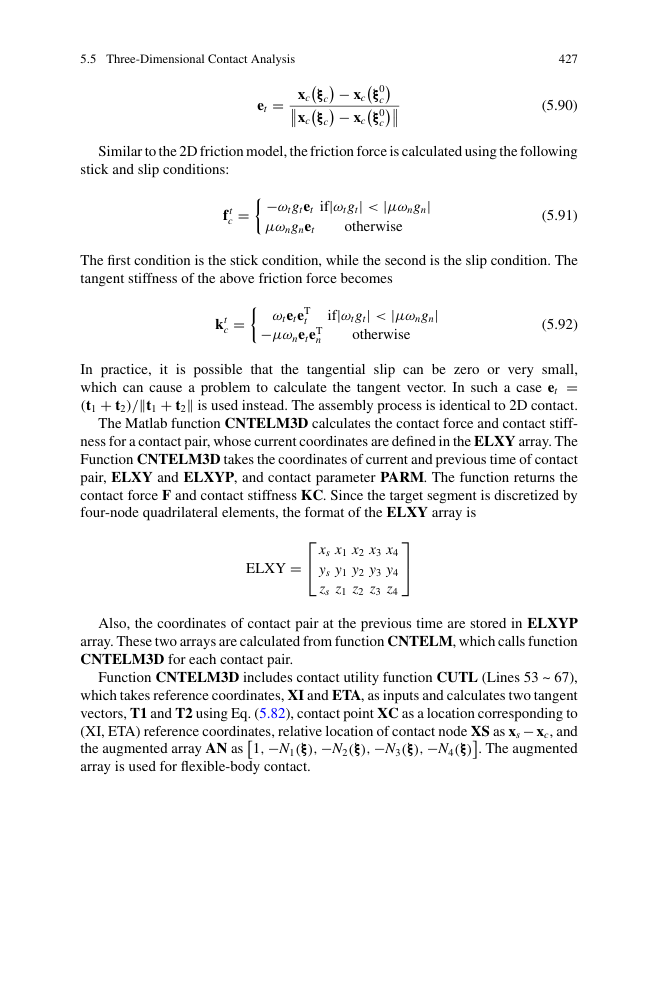

第 5 章 · 有限元分析 - 接触问题
Finite Element Analysis for Contact Problems · PDF p373–448
📖 5.1 本章概览
接触是最常见的边界非线性——接触边界随变形变化、接触力大小/方向也变化。两大难点：①不可穿透条件（约束）；②摩擦（非光滑）。
- 5.1 接触基础（接触体/目标体）
- 5.2 单点接触例子
- 5.3 接触约束公式（Lagrange 乘子 / 罚函数）
- 5.4 接触界面构造（主面/从面）
- 5.5 接触数值算法（节点-面、面-面）
- 5.6 摩擦模型（Coulomb）
- 5.7 商业软件接触设置
应用：螺栓连接、齿轮啮合、密封圈、轮胎、铆钉、薄板冲压、汽车碰撞、刹车片、轴承、塑料零件装配。

图 5.1 接触边界与接触力：法向接触力 + 切向摩擦力
🔧 5.2 单点接触例子

图 5.x 接触三状态：分离 / 粘结 / 滑动
5.2.1 悬臂梁-刚块接触（无摩擦）
悬臂梁端部自然挠度 vN(L) = 1.25 mm，刚块间隙 δ = 1 mm。自由状态 vtip > δ，发生接触。
用叠加法：vtip = vN(L) − λ/K梁 = 1.25 − λ/300000 = δ
解得 λ = 75 N。
5.2.2 悬臂梁-刚块接触（有摩擦）
拉力 P = 100 N，摩擦系数 μ = 0.25，刚块反力 λ = 150 N。
假设粘结（无滑动）：t = P = 100 N，但 t − μλ = 62.5 N > 0 → 违反粘结条件
改用滑动：t = μλ = 37.5 N，utip = 0.625 mm > 0 → 滑动有效

图 5.x 单点接触的 Lagrange 乘子 / 罚函数法求解
接触边界 = 解的一部分（不是已知）。需要在 NR 迭代中探测接触状态，根据状态施加接触力，再求解——这种"算法过程"导致不连续、不光滑。
📐 5.3 接触约束公式
5.3.1 变分不等式
接触约束把最小势能改为受限变分不等式：
s.t. g(u) ≥ 0 在接触面
5.3.2 三种数学处理方法
- Lagrange 乘子法：引入 λ 作为变量，λ ≥ 0，λ·g = 0，刚度矩阵非对角占优
- 罚函数法：g < 0 时增加罚能 (1/2)ε·g²，可有微小穿透
- 增广 Lagrange 法：罚 + 拉格朗日乘子
- Mechanical / Mortar 方法：节点-面接触，弱约束形式

图 5.x 3 种接触约束方法比较
5.3.3 Lagrange 乘子法
优：精确约束（无穿透）；劣：矩阵带状稀疏结构被破坏。
5.3.4 罚函数法
εpen 是罚因子（软化弹簧）。优：简单、不破坏矩阵结构；劣：有微小穿透（≈ √(εpen)）。
Abaqus / ANSYS 默认采用 A.L. 方法：保留拉格朗日乘子精度，又保留罚函数效率。
迭代步骤：① 像罚函数求解；② 把穿透添加到乘子修正；③ 反复直到穿透 < 阈值。
🧱 5.4 接触界面构造

图 5.x 接触界面：主面（target）+ 从面（contact）
- 主-从接触：接触体（从）面 vs 目标体（主）面（首选）
- 对称接触：两侧都对等参与（更稳健，代价更大）
- 接触探测：close-gap / short / near-field
接触面离散：
- 节点-面（NTS）：从节点积分主面罚函数。简单，但主面网格质量要求高
- 面-面（STS）：双面投影，更稳健，可处理大滑动和摩擦
- Mortar：弱约束的边界面方法
🛞 5.5 数值算法
时间步内迭代：

图 5.x 接触算法流程：预测→探测→施加→求解→判断
- 预测：求解不带接触的无约束位移
- 接触探测：找出所有穿透节点
- 接触施加：在穿透节点加反力（罚/拉格朗日）
- 求解带接触约束的位移
- 判断接触状态收敛性
- 未收敛 → 回到步骤 2
关键参数：
- gap-allowance：判定接触的距离阈值
- penetration-tolerance：可接受的最大穿透
- normal stiffness：罚因子（不可过大 / 不可过小）
- slip tolerance：判定粘滑转换
🛑 5.6 摩擦模型

图 5.x Coulomb 摩擦：粘结 + 滑动两阶段
5.6.1 Coulomb 摩擦
μ 是摩擦系数。
5.6.2 其他模型
- 指数摩擦：μ = μ∞ + (μ0 − μ∞) · e−γv（速度相关）
- 剪切极限：tmax = min(μλ, τlim)（粘接强度限制）
- 正则化：用平滑函数替代符号函数
💡 5.7 工程例子

图 5.x 工程接触例子：螺栓、密封、轴承、轮胎
- 🔩 螺栓连接：螺纹接触 + 摩擦力矩
- 🛞 轮胎-地面：大变形 + 摩擦 + 动力
- 🛢️ O 型圈密封：大变形 + 接触 + 摩擦
- ⚙️ 齿轮啮合：接触应力 + 滑动
- 🚗 车身覆盖件装配：多体接触 + 焊接变形
- 🏗️ 法兰密封：金属 + 橡胶接触
- 🔨 薄板冲压：板料与模具接触
- 🚙 汽车碰撞：车身零件之间 + 与地面
碰撞仿真（如 LS-DYNA / RADIOSS）中：
- 🚀 1 万 ~ 50 万个接触对
- 🔧 主面-从面自动检测（避免初始化穿透）
- 📈 接触力 = 罚函数法（保持显式积分稳定性）
- 🔥 接触面摩擦对总能量耗散贡献 ~10-30%
📌 5.8 本章总结
- ✅ 接触三要素：接触体 / 目标体 / 接触边界
- ✅ 三种状态：分离 / 粘结 / 滑动
- ✅ 四种约束方法：拉格朗日乘子 / 罚函数 / 增广拉格朗日 / Mortar
- ✅ 三种接触面离散：节点-面 / 面-面 / Mortar
- ✅ Coulomb 摩擦 + 速度正则化
- ✅ 工程应用：螺栓、密封、轮胎、齿轮啮合、铆钉、薄板冲压
第 6 章将进入动力学非线性（显式积分、隐式积分、时间步长准则）。
📝 5.9 习题（PDF p430-448）
- 5.1 单点接触的接触力计算
- 5.2 Lagrange 乘子法接触求解
- 5.3 罚函数法接触求解
- 5.4 摩擦粘-滑判断
- 5.5 增广 Lagrange 迭代
- 5.8 拉格朗日 vs 罚函数对比（精度 + 效率）
- 5.10 接触罚参数选取
- 5.12 接触刚度矩阵推导
- 5.15 用 MATLAB 实现 2D 接触分析
{kind=link}
{kind=link}
{kind=link}
{kind=link}
{kind=link}
{kind=link}
{kind=link}
{kind=link}